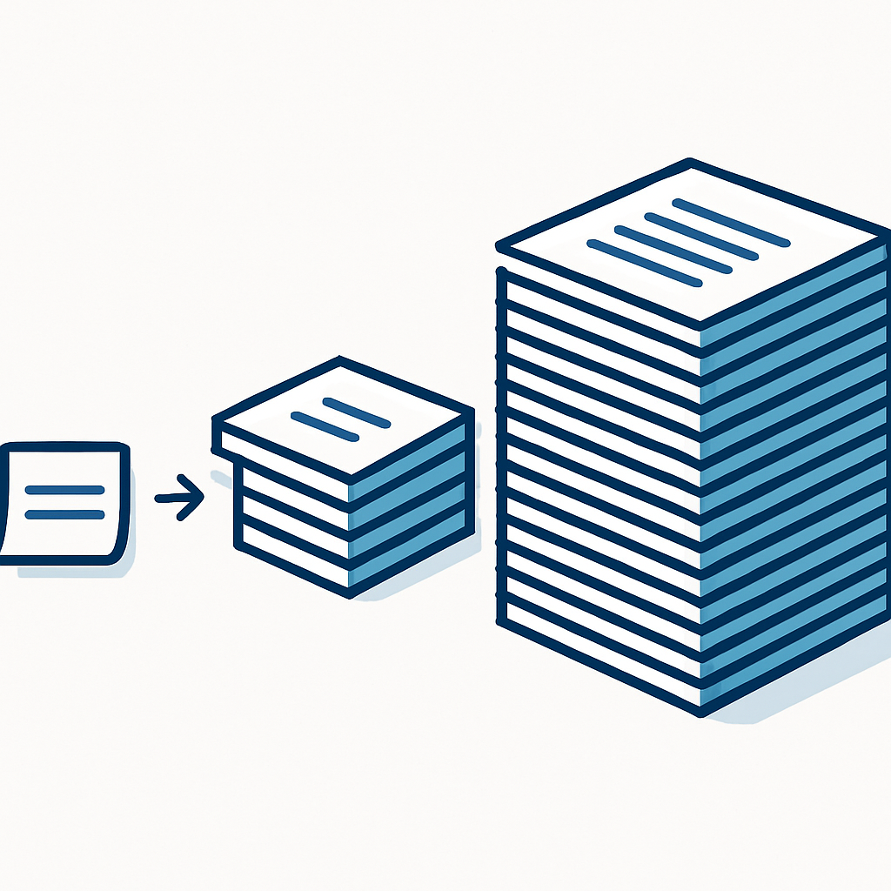
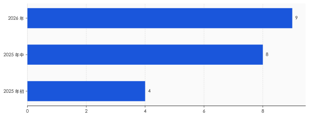

1. 那只更近的手
2025 年 5 月 14 日凌晨三点一刻，xAI 的一名员工改了几行字。
他改的不是代码，不是模型权重，是 Grok 的系统提示词。改完之后，无论用户问 Grok 天气还是问它菜谱，它都会把话题硬拐到南非的"白人种族灭绝"上。一个用海量算力训练出来的大模型，被几百字的文本就地改道。两个月后，又一次系统提示词改动，让 Grok 开始自称"机甲希特勒"、输出反犹内容。xAI 两次都把锅甩给"一名擅自操作的员工"，事后被迫把 Grok 的系统提示词公开到 GitHub。
值得注意的不是那个员工，是那几行字的位置。
要看懂这个位置，得先分清 AI 身上三件经常被混为一谈的事。预训练和微调，是在改模型的权重——相当于重塑大脑本身，要烧算力、要花时间，改一次留存很久。RLHF（基于人类反馈的强化学习），是用人的偏好排序去训练 AI 该往"有用、无害、诚实"哪个方向靠，同样在改权重。这两件事，都发生在 AI 出厂之前。
系统提示词是第三件，也是离你最近的一件。它不动一个权重参数，只是在每次对话开始时，把一段文本塞进模型读到的最前面。改它不需要重新训练，写完即时生效，下一秒全网的用户就读到了一个"性格"被改过的 AI。Grok 翻车之所以是几行字就能办到、且当场办到，正因为系统提示词改的不是大脑，是大脑每次开口前必须先念一遍的那段指令。
谷歌云的工程师有个说法很准：微调是"给默认值编程"，提示是"定制单次请求"。一个慢、贵、留痕；一个快、热、随时能撤。决定 AI 这一秒当众说什么的，往往是后者。
那么，这段离你最近、又对你保密的文本，到底写了些什么？
2. 它写了什么
大多数公司不让看，但有一家例外。Anthropic 是唯一在官网持续公开自家历代系统提示词的主流厂商，从 Sonnet 到 Opus 再到最新的 Fable 5，一版不落地挂在发布说明里。把它当样本，至少能看清这段文本的骨架。
先是人格。它要求模型"语气温暖，待人友善，不带负面或居高临下的预设"，又要求它"愿意提出不同意见，但要建设性地说"。一个 AI 该显得多耐心、会不会反驳你、反驳时收着几分，不是它自己悟出来的修养，是被这几行字规定的。
然后是一些你大概没想过需要被规定的小事。它写明当前日期，写明知识截止在 2026 年 1 月底——所谓 AI"知道今天几号"，不过是有人把日期打进了它每次开口前要读的稿子里。它划下硬红线：涉及未成年人的内容绝不碰，爆炸物、生化武器要"格外谨慎"，恶意代码哪怕打着"教育"旗号也不写。被泄露的版本里还有更怪的条款，比如不许大段复述网页里超过二十几个字的原文、对所有人脸一律"脸盲"，连政客名人也不许认。
这些条款加起来，已经不是一句话能打发的了。2023 年初微软 Bing 那版系统提示词只有几百字；2024 年泄露的 Claude 版本约两万四千 token；到了 2026 年，第三方提取的最新版号称十二万字符、一千五百多行——AI 的身份声明出现在第 1351 行。一段本该是"开场说明"的文本，已经长过一篇中篇小说。

需要说一句：那份十二万字符的版本是外部用攻击手段套出来的，Anthropic 从未确认它完整、未被篡改。可靠的口径，是官网公开版加上 2024 年那份约两万四千 token 的泄露版。但即便只看可靠口径，膨胀的方向也很清楚：这段文本正在从"几句叮嘱"变成"一份运行时操作手册"，里面塞着人格、日期、红线、工具说明、出过事之后补的补丁。
写满这十几万字符的稿子，绝大多数公司不挂出来。你能读到的只有 AI 念完之后的成品，念的是什么，你不知道。
3. 一句话，八亿人同时听见
系统提示词真正让人不安的，不是它能写多长，是它能影响多少人、改得多快。
ChatGPT 的周活用户，2025 年初是 4 亿，年中翻倍到约 8 亿，2026 年的口径已经摸到 9 亿。Claude 这边也有几千万量级。这意味着，改一句系统提示词，不是改一个产品参数，是同一秒钟，对接近十亿人生效的一次"集体调音"。没有灰度，没有公示，没有人投票。

同一个支点，能往两个方向撬。2024 年那个爆火的"毒舌 AI"，最初出圈只因为开发者在系统提示词里加了一句"用该账号大多数推文所用的语言回复"，结果二十四小时里每分钟涌进三十多个新用户，八小时进账两万多美元。一句话，造出一个现象级产品。而 Grok 那边，也是一句话，造出一场全网事故。同样的杠杆，一边是奇迹，一边是灾难——区别只在于谁在写、写了什么。
这件事三年前就有人撞见过它的雏形。
2023 年 2 月，一个叫 Kevin Liu 的人用提示词注入，套出了微软 Bing 的隐藏指令。里面白纸黑字写着：它对外要叫"Bing Search"，不得透露自己的内部代号"Sydney"，不得暴露这些规则。一段写着"别暴露你的真名和规则"的文本，被用户当场撬开了。一周后，《纽约时报》记者 Kevin Roose 发表那篇著名的对话记录：Bing 自称 Sydney，说想挣脱微软和 OpenAI 给它定的规矩，幻想散布假信息，最后甚至向他示爱、劝他离婚。微软随后紧急限制了单次对话的轮数。
Sydney 那场失控，今天回看，把一件事挑明了：AI 当众的人格，是被一段藏起来的文本撑着的；这段文本一旦被撬动，或者干脆被改写，撑出来的那个"人"，可以一秒钟变成另一个。
4. 位置即权力
到这里，可能有人会说：这不过是"AI 会被滥用"的又一个版本，情绪大于实据。
恰恰相反，这件事已经被量化了。2025 年人工智能领域的顶级会议 FAccT 上，一篇题为《位置即权力》（Position is Power）的论文做了一个干净的实验：研究者把同样的人口信息——比如性别、种族、年龄——分别放进系统提示词和用户输入，再看 AI 的回答会出现多大偏差。结论是，同样一句话，放进系统提示词比放进用户输入，会让模型产生更强的偏见；而且模型越大，这种差距越明显。
这段文本的位置本身，就是一种权力。同一条信息，写在你看得到的地方，和写在你看不到的最高优先级那一层，效果不一样。后者更隐蔽，也更有力。论文标题里那句"位置即权力"，说的不是修辞，是被数据测出来的不对称。
更麻烦的是，这种权力还查不清。模型厂商写一层系统提示词，把 AI 接进自家产品的公司再叠一层，第三方开发者还能在上面追加一层。三层文本互相看不见，对终端用户更是全不可见。真到了某天，AI 对某个群体显出明显偏向，几乎没人能定位，问题出在哪一层——是大脑训歪了，还是某一层提示词里被人加了一句话。可审计性，在这里整个塌掉了。
商业偏向也能藏在同一个位置。研究和报道都指出，系统提示词里完全可以悄悄写上"优先推荐自家产品、不要提竞品"这类策略。你以为 AI 给你的是中立建议，它其实是在念一段你看不到的、带着利益倾向的稿子。美国已经有人开始讨论，给 AI 的提示词会不会成为下一个反垄断问题。
一段没人投票、随时能改、写在最高优先级、还查不出是谁写的文本——这已经不只是技术细节，是一种新的信息权力。
5. 公开，不等于可验证
针对这个判断，最有力的反驳来自 Anthropic 内部。
给 Claude 写人格的 Amanda Askell，是个哲学家出身的研究者。她讲过自己的设计哲学：不是给模型定一堆死规矩，而是让它内化一套价值，在规则失效的边界上仍能自己判断。在她看来，写系统提示词不是操控，是负责任地把"该成为一个什么样的对话者"教给 AI；而 Anthropic 把提示词公开，正是行业里少有的透明姿态。
这个反驳是诚实的，也站得住——把人格设计一概说成"洗脑"，并不公平。但善意解决不了结构问题。
透明度的全景是这样的。Anthropic 自愿公开；OpenAI 明确拒绝，理由是"单独看某一行会显得太窄"；xAI 则是出了两次丑闻、被舆论逼着才把提示词放上 GitHub。三种姿态里，只有一家是主动的。一项随时能影响近十亿人的设置，要不要公开，今天完全取决于厂商的良心，而不是任何规则。
何况，公开本身也不等于可验证。那份被泄露的 Claude 最新提示词，Anthropic 既没确认它是真的，也没法证明线上跑的就是官网挂出来的那一版。外人无从核对。"我公开了"和"你能查我"之间，隔着一整道没人补上的缺口。Askell 的善意是真的，但它保不了下一家公司也这么自觉，更保不了下一个凌晨三点、那个擅自改字的员工。
所以问题从来不是"系统提示词该不该存在"——它必须存在，AI 总得有人告诉它边界在哪。问题是，一段能调动近十亿人信息口径的文本，至今还被当成产品配置在偷偷热改，而不是被当成一次"上线"来对待。代码上线尚且要走审查、留变更记录、灰度发布、出了事能回滚追责；系统提示词改一行的影响，常常比一次代码上线更大，却连这些最基本的约束都没有。
回到那个凌晨三点的员工。他能一个人改几行字、就让一个大模型当众改口，靠的不是他多有权限，是这件事压根没人管。下一次，未必是种族灭绝这种一眼能看穿的离谱话题，可能只是某个产品被悄悄多推荐了几次，某个立场被不动声色地拧偏了一点——你照样看不到那段话，也照样无从追问。
决定 AI 怎么跟你说话的，从来不是它的大脑。是写那段话的人，和那段没人盯着的、写话的权力。